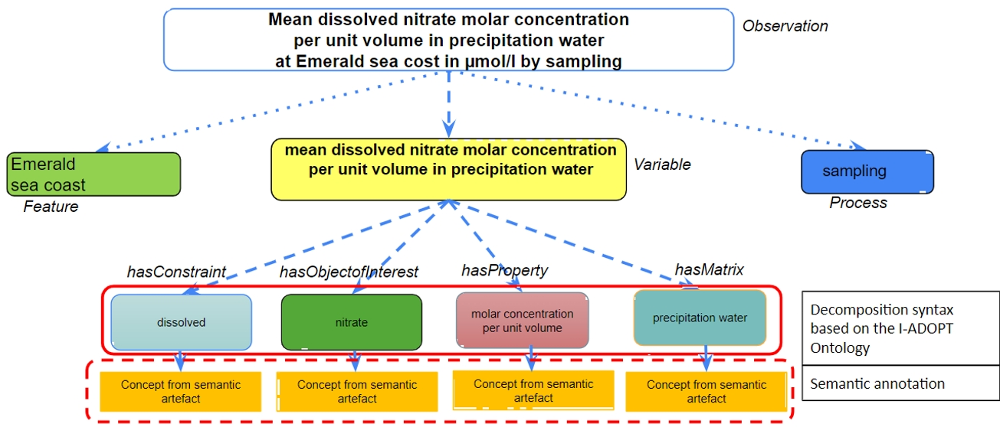

The I-ADOPT Variable Modeling Challenge
Barbara Magagna ![]()
Starting in …
Announcement
I-ADOPT aims to facilitate data interoperability by offering a common framework to
describe variables and connect terminologies used to name variables.
The I-ADOPT recommendations, endorsed by RDA, are now a candidate OGC standard.
We would like to invite you to test I-ADOPT in the Variable Modelling Challenge!
Modelers, semantic experts, data stewards and researchers from around the world -
Can you try to model a given set of variables according to the I-ADOPT Framework?
The Challenge will take place in the week from 16 to 22 September 2024.
Top scorers will be rewarded with a prize!
Update: Publication of participation rules and instructions
In preparation for the Challenge we have put together the following materials, which we recommend you to study in this order:
An introduction to the I-ADOPT Framework (Video,Slides and Notes)
A step-by-step guide for creating an I-ADOPT compliant variable description (Video,presentation)
Instructions for submitting modeled variables including participation and scoring rules (presentation)
In addition to the downloadable presentations we will soon be making them available as videos with more detailed explanations.
Attention: Subscription to the Challenge ends by September 22!
Sponsors

.png)
The Challenge

Based on detailed instructions and participation rules, participants will independently decompose the same set of variables into atomic description components according to the I-ADOPT recommendations, using concepts from applicable terminologies.
The aim of the challenge is to reveal, in a controlled setting, the similarities and differences in the way the I-ADOPT Framework is used between independent teams. The findings will certainly support the enhancement of the I-ADOPT Framework. The activity will highlight possible bottlenecks but also opportunities to extend or modify the underlying ontology and help to feed the modelling patterns knowledge base. Ultimately, the findings from this Challenge will be used to develop a semi-automated I-ADOPT variable annotation service.
Let’s challenge the I-ADOPT Framework together!
Good to know
Background information about I-ADOPT can be explored on this website.

Timeline
| Date | Action |
|---|---|
| September 16 | Start of the Challenge |
| September 22 | Subscription to the Challenge closed |
| September 22 | End of the Challenge |
| September 30 | Announcement of the winners |
| October | Analysis of the outcome |
| November 12-14 | Presentation of the Challenge and interoperability results at the RDA 23rd Plenary |